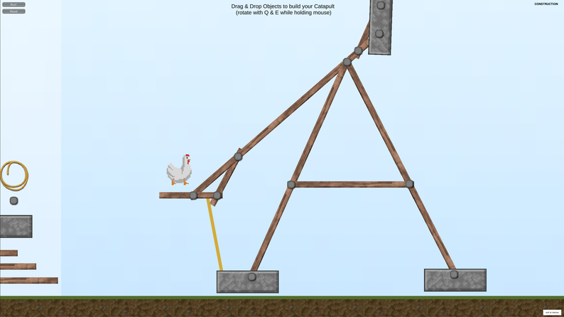

Game a Week
Chicken Catapult Constructor
Chicken Catapult Constructor is a project I created for university with just one week to pull it off. In addition every other course is happening as regular. So the time is really limited. It's a real challenge but also quite an opportunity, producing a game every week means creating 4 games a month. Designing something completely new and different every week.
So in that regard it's like a game jam, but in fact it's completely different, let me show you why:
My initial idea was to make a physics-based catapult construction game. This idea, consisting of nothing more than physical objects and the goal to build some kind of catapult, was very rough and had none of the features the game ended up having.
 (In the end it looked like this.)I spent my first day creating a very basic physics playground, with planks, stones and two modes: construction and simulation. Since Unity has a built in physics system I simply had to add rigidbodys and a few lines of code to make it work. As I handed the 'game' over to some friends with the instruction to build a catapult, they immediately started having fun with it. The outcome of a physics simulation can be funny very fast. More on this later. I was on the right path!
Since I had university- and other private stuff to do, I took a day off from the project and had some time to think about the following steps. A great benefit from the "a game a week" concept compared to a game jam.
My next step was giving the player a few more elements to better construct a catapult. Therefore, I designed nails, functioning as connectors between objects, but they can be used as hinges for rotating elements around a certain axis as well. The other big thing were the ropes. Since a real catapult also has ropes and by spawning the projectile a few seconds later, the whole construction has to be stable before, they were quite important for both realism (as far as you could call the game realistic ;-)) and gameplay. Before, the player could have effectively cheated, by placing a stone high above the catapult and use the falling down force to launch the projectile. So, trough spawning the projectile a few seconds later, the stones would have already fallen down in the moment it spawns.
After adding some camera behavior trying to always frame the right things with the best fitting scale, the next playtesting started. The feedback was mostly positive but really fast I had a good Idea of the flaws the game had, then.
- a rather complex control scheme consisting of different mouse inputs and some keys to press. Also, the left mouse button and right mouse button were not used in the same way for every interaction, some elements used drag and drop and others didn't.
- Furthermore, I needed lots of explanation not only for the controls but for the different states the simulation could be in etcetera.
- The task to build a catapult was in there, but no challenge was formulated like: hit a certain point.
So after adding explanation and correcting the control scheme I decided on giving the player the task to throw a projectile as far as possible. It best matched the idea of the sandbox. If the goal would have been destroying a castle, by throwing stones at it, the game would have had a different challenge.
The challenge to create a far shooting catapult, is way clearer and even after you built a great catapult, you would try to further improve it. After your construction has reached its maximum potential (or is totally messed up) you might have new ideas of what works better, and start with a fresh construction.
Here lies one part why the game is fun, the mastery. The willing to find the best way to archive a certain goal. Another important part is the perceived self-efficacy. The players are constructing for a certain time, and then seeing the construction in action, self-assembled, they build a functioning catapult from limited parts.
To further improve that, I added a line visualization, for the path the projectile travelled. The curves do not only look cool, they are also made by the catapult the player created himself. To finalize it, I added one important part I had in mind for a long time. Little flags, that show the distance to the starting point.
Without the small breaks, days off and play-testing sessions in-between, the game could have ended up very edged and unpolished. Not saying that it's greatly polished now, but the additional time to think and amount of feedback added a lot improvement I was able to achieve. If I had made the game during a game jam, these momentums of reflection in-between would not have been possible. I would have missed great opportunities in which I was able to identify what I think the core of the game’s idea is.
Very often during jams an imagined idea sounds great in your mind, but later in reality it doesn't work out the way you pictured it. I'm not saying that game jams are bad, or game jam games are all missing this core. That's not my point. But I think that something like "a game a week" is a great alternative or additional way of creating prototypes as well as small games in a short amount of time.
View the result on Itch.io